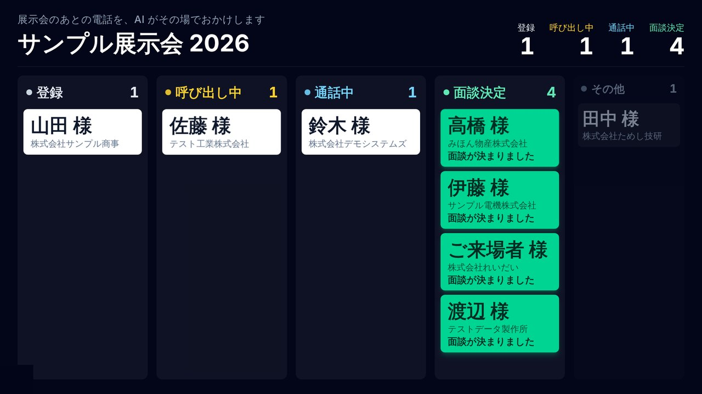
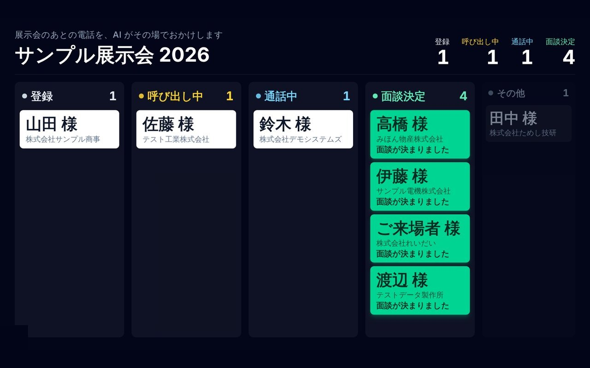
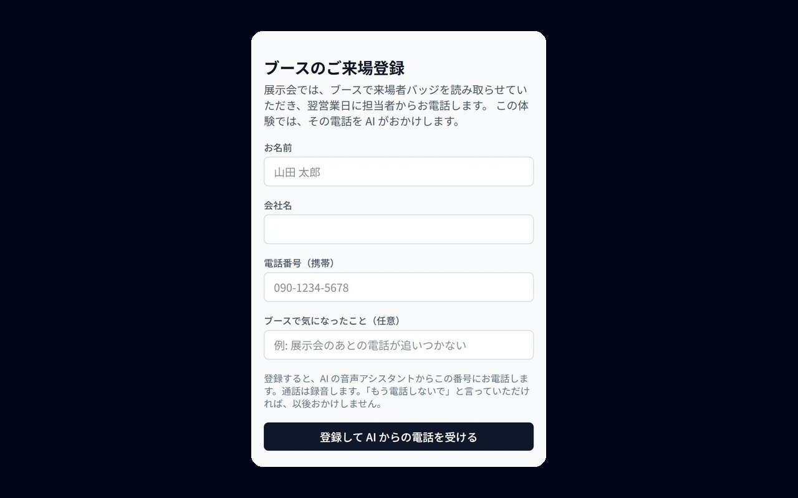
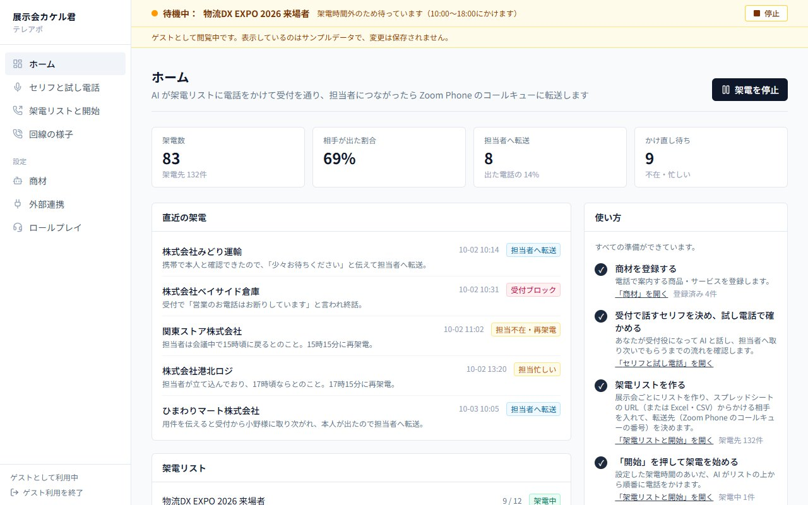
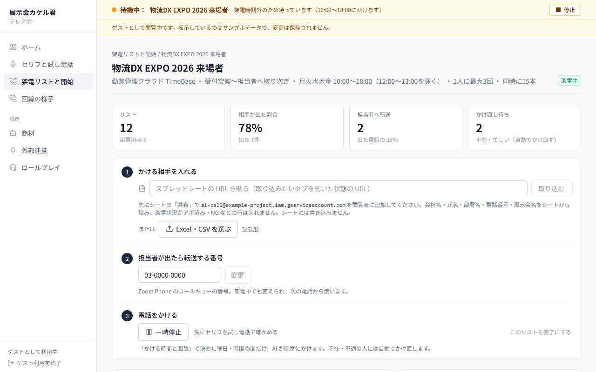
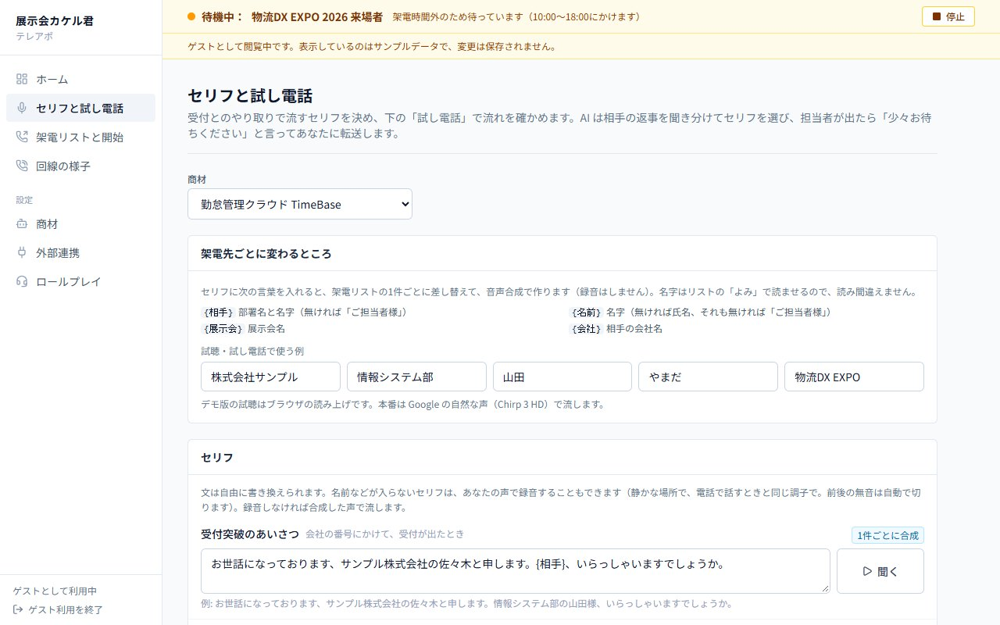
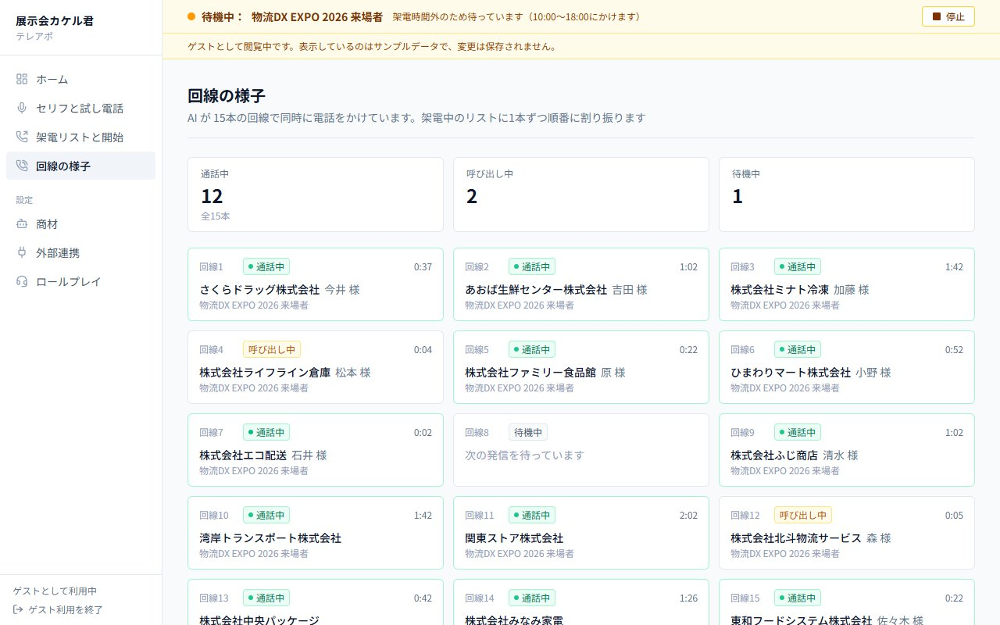

01 / Challenge · 解決したいこと
展示会ではブースで何十人、何百人と名刺やバッジを交換するのに、会期のあとに全員へ電話をかける人手が足りない。時間がたつほど相手はブースのことを忘れ、せっかくの見込み客が冷えていく。
Work / 2026
ITベンチャー1社で導入
展示会のブースで登録した来場者に、AIがすぐ電話をかけて用件を伝え、話を聞いてもらえるとなったら営業担当にそのまま電話をつなぐツール。ITベンチャー1社で導入されている。

展示会ではブースで何十人、何百人と名刺やバッジを交換するのに、会期のあとに全員へ電話をかける人手が足りない。時間がたつほど相手はブースのことを忘れ、せっかくの見込み客が冷えていく。
来場者がブースで QR コードから名前・会社・携帯番号を登録すると、約2秒でAIが電話をかける。AIはブースに寄ってもらったお礼から入り、「1分よろしいですか」に OK をもらえたら、相手に保留音を流しながら営業担当へ転送する。転送先はキャンペーンごとに画面で決められ、Zoom Phone の直通番号やコールキューにも回せる。会場の大画面には、登録した人が「登録 → 呼び出し中 → 通話中 → 面談決定」と進む様子を映せる。






登録画面と管理画面は Next.js（App Router）/ React / TypeScript / Tailwind CSS で Vercel に公開。架電リスト・台本・通話記録は Supabase に保存。電話は Twilio、会話は Gemini Live API（声のまま直接やり取りする）。通話を処理する音声ワーカーは Node.js を Docker で動かし、Oracle Cloud 東京リージョンのサーバーで24時間動かしている。
ITベンチャー1社で導入されています。電話代以外は各サービスの無料枠で動くようにして、同時に3本まで通話できます。ログイン画面の「ログインせずにゲストとして使う」から、サンプルデータの管理画面を誰でも操作できます（変更は保存されません）。